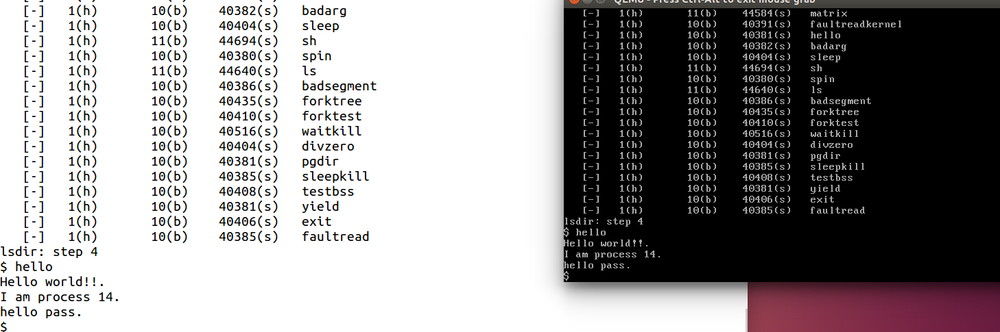

[TOC]
练习2: 完成基于文件系统的执行程序机制的实现（需要编码）
改写proc.c中的load_icode函数和其他相关函数，实现基于文件系统的执行程序机制。执行：make qemu。如果能看看到sh用户程序的执行界面，则基本成功了。如果在sh用户界面上可以执行”ls”,”hello”等其他放置在sfs文件系统中的其他执行程序，则可以认为本实验基本成功。
请在实验报告中给出设计实现基于”UNIX的硬链接和软链接机制“的概要设方案，鼓励给出详细设计方案
int
do_fork(uint32_t clone_flags, uintptr_t stack, struct trapframe *tf) {
int ret = -E_NO_FREE_PROC;
struct proc_struct *proc;
if (nr_process >= MAX_PROCESS) {
goto fork_out;
}
ret = -E_NO_MEM;
//LAB4:EXERCISE2 YOUR CODE
//LAB8:EXERCISE2 YOUR CODE HINT:how to copy the fs in parent's proc_struct?
/*
* Some Useful MACROs, Functions and DEFINEs, you can use them in below implementation.
* MACROs or Functions:
* alloc_proc: create a proc struct and init fields (lab4:exercise1)
* setup_kstack: alloc pages with size KSTACKPAGE as process kernel stack
* copy_mm: process "proc" duplicate OR share process "current"'s mm according clone_flags
* if clone_flags & CLONE_VM, then "share" ; else "duplicate"
* copy_thread: setup the trapframe on the process's kernel stack top and
* setup the kernel entry point and stack of process
* hash_proc: add proc into proc hash_list
* get_pid: alloc a unique pid for process
* wakup_proc: set proc->state = PROC_RUNNABLE
* VARIABLES:
* proc_list: the process set's list
* nr_process: the number of process set
*/
// 1. call alloc_proc to allocate a proc_struct
// 2. call setup_kstack to allocate a kernel stack for child process
// 3. call copy_mm to dup OR share mm according clone_flag
// 4. call copy_thread to setup tf & context in proc_struct
// 5. insert proc_struct into hash_list && proc_list
// 6. call wakup_proc to make the new child process RUNNABLE
// 7. set ret vaule using child proc's pid
if ((proc = alloc_proc()) == NULL) {
goto fork_out;
}
proc->parent = current;
assert(current->wait_state == 0);
if (setup_kstack(proc) != 0) {
goto bad_fork_cleanup_proc;
}
// 新增******************复制父亲文件系统
if( (ret = copy_files( clone_flags,proc->filesp)) != 0 )
goto bad_fork_cleanup_fs;
if (copy_mm(clone_flags, proc) != 0) {
goto bad_fork_cleanup_kstack;
}
copy_thread(proc, stack, tf);
bool intr_flag;
local_intr_save(intr_flag);
{
proc->pid = get_pid();
hash_proc(proc);
// list_add(&proc_list, &(proc->list_link));
set_links(proc);
// nr_process ++;
}
local_intr_restore(intr_flag);
wakeup_proc(proc);
ret = proc->pid;
//LAB5 YOUR CODE : (update LAB4 steps)
/* Some Functions
* set_links: set the relation links of process. ALSO SEE: remove_links: lean the relation links of process
* -------------------
* update step 1: set child proc's parent to current process, make sure current process's wait_state is 0
* update step 5: insert proc_struct into hash_list && proc_list, set the relation links of process
*/
fork_out:
return ret;
bad_fork_cleanup_fs: //for LAB8
put_files(proc);
bad_fork_cleanup_kstack:
put_kstack(proc);
bad_fork_cleanup_proc:
kfree(proc);
goto fork_out;
}
// load_icode_read is used by load_icode in LAB8
//
static int
load_icode_read(int fd, void *buf, size_t len, off_t offset) {
int ret;
if ((ret = sysfile_seek(fd, offset, LSEEK_SET)) != 0) {
// sysfile_seek找到的话就返回0 LSEEK_SET表示寻找文件的开始,判断文件是否存在
return ret;
}
if ((ret = sysfile_read(fd, buf, len)) != len) {
// 前面可以找到就可以读文件了,读到buf里面,读完判断和要读的len是否相等,相等的话返回就是0否则非0
return (ret < 0) ? ret : -1;
}
return 0;
}
// load_icode - called by sys_exec-->do_execve
static int
load_icode(int fd, int argc, char **kargv) {
//char *kargv[EXEC_MAX_ARG_NUM]; EXEC_MAX_ARG_NUM是32
/* LAB8:EXERCISE2 YOUR CODE HINT:how to load the file with handler fd in to process's memory? how to setup argc/argv?
* MACROs or Functions:
* mm_create - create a mm
* setup_pgdir - setup pgdir in mm
* load_icode_read - read raw data content of program file
* mm_map - build new vma
* pgdir_alloc_page - allocate new memory for TEXT/DATA/BSS/stack parts
* lcr3 - update Page Directory Addr Register -- CR3
*/
/* (1) create a new mm for current process
* (2) create a new PDT, and mm->pgdir= kernel virtual addr of PDT
* (3) copy TEXT/DATA/BSS parts in binary to memory space of process
* (3.1) read raw data content in file and resolve elfhdr
* (3.2) read raw data content in file and resolve proghdr based on info in elfhdr
* (3.3) call mm_map to build vma related to TEXT/DATA
* (3.4) callpgdir_alloc_page to allocate page for TEXT/DATA, read contents in file
* and copy them into the new allocated pages
* (3.5) callpgdir_alloc_page to allocate pages for BSS, memset zero in these pages
* (4) call mm_map to setup user stack, and put parameters into user stack
* (5) setup current process's mm, cr3, reset pgidr (using lcr3 MARCO)
* (6) setup uargc and uargv in user stacks
* (7) setup trapframe for user environment
* (8) if up steps failed, you should cleanup the env.
*/
// 自己3个小时写了一大半结果全错了-__-，直接拷贝答案解释把，，，，我太弱了
// 为什么。。。。。
assert(argc >= 0 && argc <= EXEC_MAX_ARG_NUM);
// 前面do_execve已经清空了
if (current->mm != NULL) {
panic("load_icode: current->mm must be empty.\n");
}
int ret = -E_NO_MEM;
//1. 为当前进程创建新的mm(vma虚拟内存空间的控制结构)
struct mm_struct *mm;
if ((mm = mm_create()) == NULL) {
goto bad_mm;
}
//2. 创建mm的新的PDT(vma虚拟内存空间的页目录表基址)
if (setup_pgdir(mm) != 0) {
goto bad_pgdir_cleanup_mm;
}
//3. 把代码段数据段BSS段复制到进程的内存空间
// 先定义一个page
struct Page *page;
// 3.1 定义elf文件头,定义一个指向他的指针(修改用)(奇奇怪怪)
struct elfhdr __elf, *elf = &__elf;
// 从file里读elfhdr结构体大小size的内容并且放到elf指向的__elf里面(正常完成就返回0)
if ((ret = load_icode_read(fd, elf, sizeof(struct elfhdr), 0)) != 0) {
goto bad_elf_cleanup_pgdir;// 否则就跳过去清除直接建立的pgt和mm,下面goto类似就不一一解释了
}
// 如果elf不符合ELF_MAGIC的规定那就有问题！
if (elf->e_magic != ELF_MAGIC) {
ret = -E_INVAL_ELF;
goto bad_elf_cleanup_pgdir;
}
// 3.2 建立一个proghdr并且也建立一个指针用来修改(和前面类似)
struct proghdr __ph, *ph = &__ph;
// 虚拟空间标识,权限,程序头/段的个数
uint32_t vm_flags, perm, phnum;
// 逐个读取程序段
for (phnum = 0; phnum < elf->e_phnum; phnum ++) {
// off_t是int32,获取程序段的起始地址
off_t phoff = elf->e_phoff + sizeof(struct proghdr) * phnum;
// 向ph中加载程序段,加载成功返回值就是0
if ((ret = load_icode_read(fd, ph, sizeof(struct proghdr), phoff)) != 0) {
goto bad_cleanup_mmap;
}
// 判断如果是不可加载那就直接跳到下一个程序头
if (ph->p_type != ELF_PT_LOAD) {
continue ;
}
// 如果文件中程序段大小 > 其在内存中段大小那就出现错误(因为此时还没有加BSS段)
if (ph->p_filesz > ph->p_memsz) {
ret = -E_INVAL_ELF;
goto bad_cleanup_mmap;
}
// 当然如果文件中程序段大小为0,那也直接跳到下一个程序段读了
if (ph->p_filesz == 0) {
continue ;
}
// 3.3 设立页表项/页目录项标志为用户,根据程序头中的flags设立虚拟空间的vm_flags
vm_flags = 0, perm = PTE_U;
if (ph->p_flags & ELF_PF_X) vm_flags |= VM_EXEC;
if (ph->p_flags & ELF_PF_W) vm_flags |= VM_WRITE;
if (ph->p_flags & ELF_PF_R) vm_flags |= VM_READ;
if (vm_flags & VM_WRITE) perm |= PTE_W; // 根据vm是否可写判断PTE是否可写
// 给mm项创建一个vma项(存在于mmap_list构成的双向链表)
if ((ret = mm_map(mm, ph->p_va, ph->p_memsz, vm_flags, NULL)) != 0) {
goto bad_cleanup_mmap;
}
// 获取程序段中文件偏移位置,start为程序段虚拟地址,la是页对齐的起始地址,end是(p_filesz是文件中程序段的大小)程序段虚拟地址截止地址
off_t offset = ph->p_offset;
size_t off, size;
uintptr_t start = ph->p_va, end, la = ROUNDDOWN(start, PGSIZE);
ret = -E_NO_MEM;
// 按照文件中段的大小设定截止地址
end = ph->p_va + ph->p_filesz;
// 3.4 逐个页把程序段文件(TEXT/DATA)内容读到内存
while (start < end) {
// 给page分配一个页然后设置物理地址和线性地址的映射(la和mm->pgdir)
if ((page = pgdir_alloc_page(mm->pgdir, la, perm)) == NULL) {
ret = -E_NO_MEM;
goto bad_cleanup_mmap;
}
// off为页中地址偏移,size是这个页中数据大小(从off开始计算),la就变为下一个页的起始地址了
off = start - la, size = PGSIZE - off, la += PGSIZE;
// 如果已经超过结尾地址了,那就把size矫正一下变为size - (la - end)也就是减去后面的la和end的差值
if (end < la) {
size -= la - end;
}
// 把file里面页对其的部分page的内容整个搬到page里面
if ((ret = load_icode_read(fd, page2kva(page) + off, size, offset)) != 0) {
goto bad_cleanup_mmap;
}
// 更改start和offset(除去已经读过的部分)
start += size, offset += size;
}
// end变为内存中段的截止地址
end = ph->p_va + ph->p_memsz;
// 3.5.1 如果最后一个页的内容没有填满,那就把剩余的部分全部清零分给BSS段
if (start < la) {
/* ph->p_memsz == ph->p_filesz */
if (start == end) {// 如果已经读的和这个恰好相等,那就直接跳到下一程序段
continue ;
}
// off是这个页中已经读数据的截止地址,size就是剩余没有数据的地方
off = start + PGSIZE - la, size = PGSIZE - off;
// 矫正size(和上面类似)
if (end < la) {
size -= la - end;
}
// 清0操作
memset(page2kva(page) + off, 0, size);
// start现在是页对齐的截止地址
start += size;
assert((end < la && start == end) || (end >= la && start == la));
}
// 3.5.2 如果BSS段(p_memsz > p_filesz)要更多空间,那就继续分配。TEXT/DATA后就是BSS段
while (start < end) {
if ((page = pgdir_alloc_page(mm->pgdir, la, perm)) == NULL) {
ret = -E_NO_MEM;
goto bad_cleanup_mmap;
}
off = start - la, size = PGSIZE - off, la += PGSIZE;
if (end < la) {
size -= la - end;
}
memset(page2kva(page) + off, 0, size);
start += size;
}
}
// 关闭文件
sysfile_close(fd);
vm_flags = VM_READ | VM_WRITE | VM_STACK;
// 4. mm又创建一个vma项作为用户栈
if ((ret = mm_map(mm, USTACKTOP - USTACKSIZE, USTACKSIZE, vm_flags, NULL)) != 0) {
goto bad_cleanup_mmap;
}
// 给用户栈分配页并且完成pa和la映射
assert(pgdir_alloc_page(mm->pgdir, USTACKTOP-PGSIZE , PTE_USER) != NULL);
assert(pgdir_alloc_page(mm->pgdir, USTACKTOP-2*PGSIZE , PTE_USER) != NULL);
assert(pgdir_alloc_page(mm->pgdir, USTACKTOP-3*PGSIZE , PTE_USER) != NULL);
assert(pgdir_alloc_page(mm->pgdir, USTACKTOP-4*PGSIZE , PTE_USER) != NULL);
// vma数量+1,将mm和当前进程连接
mm_count_inc(mm);
// 5. 切换到用户的内存空间，这样的话后文中在栈上设置参数部分的操作将大大简化，因为具体因为空间不足而导致的分配物理页的操作已经交由page fault处理了，是完全透明的
current->mm = mm;
current->cr3 = PADDR(mm->pgdir); // 改页目录表
lcr3(PADDR(mm->pgdir)); // 环境切换到当前进程的页表
//6. setup argc, argv 在用户栈中设置用户的参数
uint32_t argv_size=0, i;
// 先获取参数的所有长度
for (i = 0; i < argc; i ++) {
argv_size += strnlen(kargv[i],EXEC_MAX_ARG_LEN + 1)+1;
}
// 获取栈顶user esp
uintptr_t stacktop = USTACKTOP - (argv_size/sizeof(long)+1)*sizeof(long);
char** uargv=(char **)(stacktop - argc * sizeof(char *));
argv_size = 0;
// 从esp[0]依次拷贝参数到uargv
for (i = 0; i < argc; i ++) {
uargv[i] = strcpy((char *)(stacktop + argv_size ), kargv[i]);
argv_size += strnlen(kargv[i],EXEC_MAX_ARG_LEN + 1)+1;// 最大4kB？？
}
// 计算当前用户栈顶(就是参数减去一个参数count,注意：栈顶是低地址)
stacktop = (uintptr_t)uargv - sizeof(int);
*(int *)stacktop = argc; // 为什么Clion模拟运行不出来
// 7. setup trapframe for user environment
struct trapframe *tf = current->tf;
memset(tf, 0, sizeof(struct trapframe));// 先初始化清零
tf->tf_cs = USER_CS; // 用户代码段
tf->tf_ds = tf->tf_es = tf->tf_ss = USER_DS; // 用户数据段
tf->tf_esp = stacktop; // 用户栈顶
tf->tf_eip = elf->e_entry; // elf的可执行代码入口
tf->tf_eflags = FL_IF; // 中断标志
ret = 0; // 一切正常置ret为0 并返回
out:
return ret;
bad_cleanup_mmap:
exit_mmap(mm);
bad_elf_cleanup_pgdir:
put_pgdir(mm);
bad_pgdir_cleanup_mm:
mm_destroy(mm);
bad_mm:
goto out;
}
测试一直失败。。。。。。。。。。
后来根据答案一替一个比对发现前面的lab居然还有错的。。。。然后我又改了一遍前面的答案,最后一个联系费时1天半,感觉是最难的了

问题回答
参考：https://cloud.tencent.com/developer/article/1480217
观察到保存在磁盘上的 inode 信息均存在一个 nlinks 变量用于表示当前文件的被链接的计数，因而支持实现硬链接和软链接机制；
- 如果在磁盘上创建一个文件 A 的软链接 B，那么将 B 当成正常的文件创建 inode，然后将 TYPE 域设置为链接，然后使用剩余的域中的一个，指向 A 的 inode 位置，然后再额外使用一个位来标记当前的链接是软链接还是硬链接；
- 当访问到文件 B（read，write 等系统调用），判断如果 B 是一个链接，则实际是将对B指向的文件A（已经知道了 A 的 inode 位置）进行操作；
- 当删除一个软链接 B 的时候，直接将其在磁盘上的 inode 删掉即可；
- 如果在磁盘上的文件 A 创建一个硬链接 B，那么在按照软链接的方法创建完 B 之后，还需要将 A 中的被链接的计数加 1；
- 访问硬链接的方式与访问软链接是一致的；
- 当删除一个硬链接B的时候，除了需要删除掉 B 的 inode 之外，还需要将 B 指向的文件 A 的被链接计数减 1，如果减到了 0，则需要将 A 删除掉；